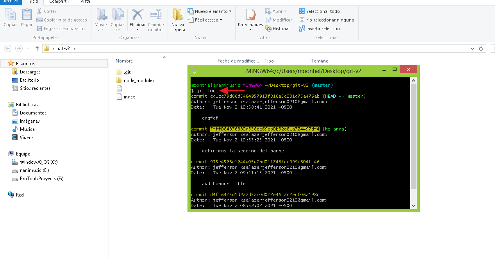
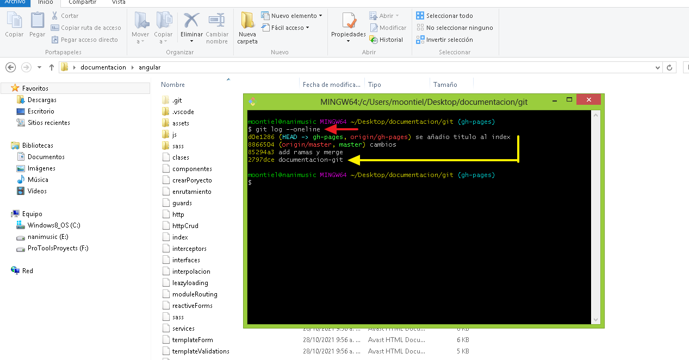

04. Git Log y Git Commit
Hablemos de git log que nos permite conocer detalles de los commits realizados y git commit que nos permite manipular un commit especifico.
01. Git log: Datos exactos de los commits

02. Git log --oneline: Conociendo los commits

-------------------- End --------------------
01. Git checkout "codigo": Permite navegar a un commit
02. Validando en el editor
03. Saliendo del commit
04. Validando en el editor
-------------------- End --------------------
01. Modificando un archivo
02. Git revert codigo: Remueve un commit
03. Saliendo de la consola bin
04. Nuevo commit generado

05. Validando el commit revertido

End Git Commits & Git Logs